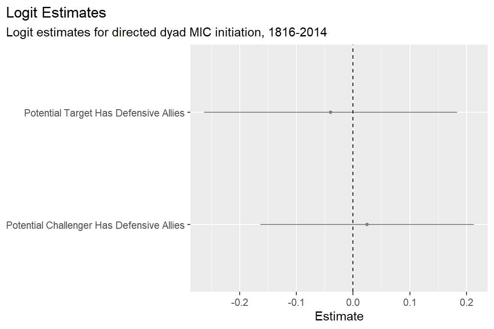

## packages and tools
library(tidyverse)
library(peacesciencer)
source(
"https://raw.githubusercontent.com/milesdwilliams15/death-destruction-data/refs/heads/main/helpers/peacesciencer_extras.R"
)
## make the data
create_dyadyears(
subset_years = 1816:2014
) |>
add_icd_mics(level = 4) |>
add_atop_alliance() |> # adds atop alliance data
add_contiguity() |>
add_cow_majors() |>
add_cap_dist() -> dt
## clean up the controls
dt |>
## controls
mutate(
cont = ifelse(conttype > 0, 1, 0),
major = pmax(cowmaj1, cowmaj2),
ldist = log(capdist),
dyad = 1000 * pmin(ccode1, ccode2) + pmax(ccode1, ccode2)
) -> dt9 Alliances and War
Main ideas:
Do alliances deter war? The debate is unsettled. Some evidence supports deterrence, while critics point to alliance failures (e.g., WWI) and counterarguments like commitment problems, moral hazard, and security dilemmas.
Three competing hypotheses are tested: alliances deter attack (H1), alliances provoke attack on members (H2), and alliance members are more likely to initiate conflict (H3).
The ATOP dataset is one of the most comprehensive datasets available for studying alliances. It tracks five alliance types (defensive, offensive, neutrality, non-aggression, and consultation), with defensive alliances receiving the most scholarly attention.
Empirical analysis using directed dyad-year data and logit regression yields null results: no significant relationship between defensive alliances and conflict initiation. The disappointing results probably are driven by the blunt alliance measures used and a binary framing of whether alliances deter or provoke. Maybe it’s better to test when alliances deter rather than whether they do.
Defense Cooperation Agreements (DCAs) are an underexplored but promising area of research. If you are interested in studying alliances, DCAs might be a better place to focus your energies.
9.1 Do Alliances Deter?
One of the first questions quantitative peace scientists started asking is whether alliances promote peace. Decades later, the issue remains unsettled. Lots of evidence supports the idea that alliances promote peace, but critics point to important alliance failures, such as what happened in the lead up to World War I. As recently as last year, yet another study tried to resolve this debate (Choi 2025). More follow-up is likely to come.
The tension between supporters and detractors centers on whether membership in an alliance increases the perceived cost of war, or if alliances provoke conflict (see Kenwick and McManus 2021 for a comprehensive survey).
On the deterrence side, proponents situate alliances within the bargaining model of war. Recall that in the bargaining model, war is the result of failed negotiations (Fearon 1995), or else a continued means of negotiation that helps sides of a dispute converge in their assessment of the balance of power between adversaries (Wagner 2000). Those who support deterrence argue that if a potential target has defensive alliances with other countries, this increases the perceived cost of war to the would-be challenger. Alliances, therefore, create an incentive to solve disputes peacefully and, thus, have a deterrent effect on armed conflict.
On the provocation side, detractors argue that joining alliances can be counterproductive for a few reasons. The first is that they create commitment problems. According to Fearon (1995), countries negotiating over an issue may have a hard time committing to peace if they anticipate shifts in the balance of power. In the bargaining model, the current balance of power is central to defining the range of possible negotiated settlements that countries would prefer to war. Obviously, the country with more power should expect a better deal. But if the distribution of power is going to change in the future, the side that will lose power may be inclined to fight a war now to avoid a worse deal later. In many realist theories of international relations, alliances provide countries with ways to pool military capabilities and, thus, increase their relative power. The logic is simple: joining an alliance affects the balance of power, changes in the balance of power are the source of commitment problems, therefore alliances provoke rather than deter.
Detractors also worry about moral hazard. Moral hazard is the idea that people or groups take riskier behaviors when they think some or most of the costs will be borne by others. The worry with alliances is that they create a moral hazard by allowing a country to start a war while their allies bear some or most of the costs. Again, in the bargaining model, the cost of war is the main factor that creates an incentive for peaceful settlements in disputes. If having allies mitigates some of the cost of war, alliances should increase the chance of conflict.
Finally, detractors worry that alliances create security dilemmas. This is another classic problem in international relations thought with some roots in realist theory. It captures the idea that taking steps to defend yourself can actually make others feel insecure—hence, the dilemma. While improving your defensive abilities seems like a good idea to ensure your security, others may see this as a threat and respond, either by building up their own abilities, or starting a war to prevent you from becoming too powerful. Joining a defensive alliance, therefore, might actually increase the chances you are attacked.
These three perspectives imply three competing hypotheses:
Hypothesis 1 (deterrence): Countries are less likely to attack countries that are members of an alliance.
Hypothesis 2 (commitment problem/security dilemma): Countries are more likely to attack countries that are members of an alliance.
Hypothesis 3 (moral hazard): Countries that are members of an alliance are more likely to attack other countries.
Hypotheses 1 and 2 are directly at odds, but hypothesis 3 could be true regardless of 1 and 2.
In the applied example that follows, I’ll show you how to put these hypotheses to the test. But first, I want to introduce you to an important alliance dataset that has become a mainstay in the alliance literature.
9.2 Measuring Alliances
What are “alliances,” and what does it mean to say that countries are “allies?” The term alliance is subject to a lot of conceptual drift, especially when it comes to popular discourse and punditry. An ally can be a country that has signed a specific treaty with one or several other countries, or an ally can refer to a friendly nation with interests held in common with others. It’s often unclear which way someone is using the term “alliance.” You’ll frequently hear people refer to Israel as an ally of the United States, for example, even though Israel and the United States do not have a formal military treaty in force between them.
When political scientists refer to countries as allies, they specifically mean countries that have signed “legally binding” treaties that obligate members to some form of military cooperation in response to military conflict. The North Atlantic Treaty Organization (NATO) is a prominent example, but it’s hardly representative of the diversity of alliances that countries can enter into. Treaties vary in terms of the obligations they impose on members, conditions under which obligations can be invoked, and the scope of military action they entail. NATO is well known for its provision that an attack on one member is an attack on all, and all members are obliged to come to the military defense of any member that is attacked by an external threat. This is known as a defensive alliance. But not all alliances are so extreme.
Many different datasets track information about alliances, but one of the most commonly used is the Alliance and Treaty Obligations and Provisions (ATOP) dataset (Leeds et al. 2002). According to ATOP’s website, “The Alliance Treaty Obligations and Provisions (ATOP) project provides data regarding the content of military alliance agreements signed by all countries of the world between 1815 and 2018.” ATOP tracks five different alliance types, and within each type you can observe yet more variation in treaty obligations.
The five main kinds of alliances according to ATOP are:
- Defensive: promises to assist an ally militarily in the event of attack on the ally’s sovereignty or territorial integrity
- Offensive: a commitment to assist an ally militarily in territory outside the alliance in the absence of a direct attack on any member
- Neutrality: a promise to refrain from assisting an ally’s adversary in the event of an attack on the ally
- Non-aggression: a promise to refrain from military conflict with an ally
- Consultation: a promise to communicate with the goal of coordinating actions in the event of a military crisis
Defensive and offensive pacts demand the most of allies because they compel members to engage in direct military action. Neutrality, non-aggression, and consultation pacts are less demanding since they don’t involve direct military cooperation. This isn’t to say the latter three are unimportant. I recently published research showing how non-aggression treaties influence foreign aid flows, which in turn condition the material benefits non-aggression allies receive from trade and foreign direct investment in their relationships with non-allies (Williams 2025). It’s best to think of alliances as solving unique problems for their members, with alliance provisions uniquely suited to solving said problems.
However, even though all alliances are important in their own way, for obvious reasons, peace scientists have given the greatest attention to defensive treaties. (Researchers pay some attention to offensive treaties, too, but offensive pacts are historically rare compared to defensive pacts.) Two prominent defensive pacts were at the heart of Cold War animosities between the United States and the Soviet Union: NATO and the Warsaw Pact. A good deal of international relations research during and after the Cold War therefore was deeply concerned with the effectiveness of defensive pacts for preserving peace or provoking war. The theoretical arguments about alliances I discussed in the previous section apply to defensive alliances.
As a quick aside, beyond alliances, other forms of military cooperation exist as well. One variety that is starting to catch the attention of researchers is known as a “defense cooperation agreement” or DCA. According to Kinne (2020), who recently introduced a new dataset tracking DCAs, these kinds of military agreements are far more common than formal military alliances (over 2,000 have come into existence since 1980) and have much more temporal variation than formal alliances (which often remain static for decades). What makes DCAs unique is that they are bilateral, meaning they are agreements between only two countries at once. They also do not operate like traditional defensive treaties in that members aren’t obligated to come to the direct military aid of an ally that’s attacked. But, DCAs do deal with day-to-day military operations, defense coordination, joint research and development, arms trade, military exercises, and so on. Kinne (2020) found compelling evidence that DCAs are good predictors of dyadic peace and arms trade between members. Since Kinne (2020) introduced his DCA dataset in 2020, 87 studies have cited it (at least according to Google Scholar). If I were an intrepid young conflict scholar, I would certainly consider taking a close look at these agreements because they provide a fresh take on military cooperation.
This is as far as I’ll go in talking about DCAs, though. Because of their ubiquity in the peace science literature, I’ll focus just on formal military alliances in my example in the next section. Nonetheless, I wanted to flag DCAs for your awareness since tracking them and testing their effects is an important new trend in peace science research.
9.3 Testing the Deterrent Effect of Alliances
The {peacesciencer} package gives you direct access to ATOP’s alliance data, which makes it easy to quickly create a dataset to test the effect of alliances on international conflict. The below code creates a directed-dyad-year dataset from 1816 to 2014 and then populates it with all the relevant variables. Recall that in directed dyadic datasets, country pairs are the unit of analysis, but each pair appears twice: once with Country A as the potential challenger and Country B as the potential target, and once with the roles reversed. This kind of dataset is ideal for studying the behavior of one country toward others.
With my dataset ready, I need to create the appropriate alliance measures for testing whether alliances deter or provoke conflict. All three hypotheses I proposed earlier (deterrence, commitment problems/security dilemma, and moral hazard) require measures of whether a potential target has any alliances with other countries, and of whether a potential challenger has any alliances with other countries. In both cases, both measures need to capture variation in defensive treaties because, as I noted earlier, this is the kind of alliance the literature tends to highlight (almost by default).
The below code shows you one way to create the relevant measures from the data. It creates a measure called target_defense which equals 1 if country 2 in a dyad has any defensive treaties with countries other than country 1 in the dyad. The second measure, challenger_defense, equals 1 if country 1 has any defensive treaties with countries other than country 2. These measures have to be constructed from the raw data because the {peacesciencer} function add_atop_alliance() only provides you with indicators of dyadic membership.
dt |>
group_by(ccode2, year) |>
mutate(
target_defense = ifelse(any(atop_defense == 1), 1, 0) *
(1 - atop_defense)
) |>
group_by(ccode1, year) |>
mutate(
challenger_defense = ifelse(any(atop_defense == 1), 1, 0) *
(1 - atop_defense)
) |>
ungroup() -> dtNow, I just need to estimate my regression model. The below code, as in all previous chapters, estimates a logit model of conflict onset and returns model estimates with robust standard errors clustered by unique dyads. Because the dataset is directed, the outcome is whether country 1 in a dyad initiates a militarized interstate confrontation (MIC) with country 2.
glm_robust(
miconset_init1 ~ target_defense + challenger_defense +
cont + major + ldist +
micspell + I(micspell^2) + I(micspell^3),
data = dt,
clusters = "dyad"
) -> fitThe below figure shows the results, which are…disappointing. Null results across the board. I feel like I have deja vu from the analysis I did in the last chapter on the trading peace where I also failed to obtain significant results (at least not right away).
fit |>
slice(2:3) |>
coef_plot(
coef_map = c(
"Potential Target Has Defensive Allies",
"Potential Challenger Has Defensive Allies"
)
) +
labs(
title = "Logit Estimates",
subtitle = "Logit estimates for directed dyad MIC initiation, 1816-2014"
)
After seeing these results, I felt sorely tempted to keep poking and prodding the data, but I already told you in the last chapter to avoid the temptation to fiddle with the data until it gives you the results you want to see. Instead, I’ll set this aside and point to a few important things for you to consider when testing whether alliances matter for war.
The first is a technical measurement issue. In work published in Foreign Policy Analysis, Johnson and Leeds (2011) find strong evidence that alliances deter, but how they go about identifying which alliances matter is more nuanced than the blunt approach I took in my example. In addition to focusing on defensive alliances, Johnson and Leeds (2011) also used some extra criteria for including or excluding defensive alliances in their study:
- All secret defensive alliances are eliminated (yes, these do exist).
- Only asymmetric alliances are included for members that can expect support in the event of hostilities (some alliance obligations are one-way).
- Defensive alliances that would not get invoked in response to a certain challenger are eliminated (some alliances have explicit provisions that only apply if an ally is attacked by certain countries).
- Alliances that are limited to a particular ongoing conflict are applicable only in directed dyad-years in which the potential challenger is involved in the specified conflict on the opposite side (this would apply for alliances that only form after the onset of a conflict, with provisions that are limited to the countries already involved).
- All remaining defensive alliances count.
These criteria are meant to whittle out irrelevant defensive alliances that could not plausibly have a deterrent effect against, or create a moral hazard for, certain challengers.
While {peacesciencer} offers easy access to ATOP’s alliance data, it doesn’t offer the level of granularity required to do this kind of refinement. You would need to go to the source by downloading the full ATOP dataset from its website. The full dataset offers much more alliance specific information.
Aside from nuanced measurement issues, a second limitation with my example is that it tests whether alliances deter, while more recent scholarship advises testing when alliances deter (Kenwick and McManus 2021). The estimates from the regression model look noisy, but one of the intuitions you start to develop as a quantitative social scientist is that not everything that looks like noise actually is noise. Instead, you might be observing effect heterogeneity, which is a fancy way of saying that an explanatory variable of interest predicts changes in an outcome in varying magnitudes and directions, as might be the case if alliances deter weak states but provoke strong ones, for example. Sometimes, certain factors determine systematically how big and in which direction effects go, and if you fail to account for this, your findings may be biased. A research design that tests when alliances deter, and when they provoke, would be more useful. It would certainly be more interesting as well.
9.4 Summary
In summary, the importance of alliances in war is a well-worn subject in peace science. But, like the issues discussed in previous chapters (power, democracy, and trade), well-worn \(\not =\) consensus. Some studies find evidence that alliances deter, but others find the opposite. Even as recently as last year, new research tried to resolve the debate (Choi 2025), and surely more research will follow.
Many difficulties come with studying the effect of alliances on conflict. One issue that came up in my example analysis is the substantial variation in alliance obligations, even within the same alliance type. The most important issue to attend to in alliance research is identifying which alliances count and which are irrelevant. The ATOP project provides one of the most comprehensive datasets available on alliances (Leeds et al. 2002), and it also happens to be accessible via the {peacesciencer} package. But to add necessary refinements to your alliance measures, I’d recommend going directly to the ATOP project page and downloading the data directly. I probably failed to identify a significant relationship between alliances and conflict in my analysis because {peacesciencer} doesn’t give me the ability to whittle alliances down to only those that are relevant.
My analysis also failed to offer much nuance. Much of the alliance literature is mired in a debate over whether alliances promote peace or provoke war, and my analysis was geared toward testing the effect of alliances in these very same either-or, black-and-white terms. But as Kenwick and McManus (2021) argue in their recent survey of the alliance literature, it would be more fruitful, and more interesting, to start theorizing and testing when alliances deter or provoke instead of whether they deter or provoke.
Beyond formal military alliances, other kinds of military agreements are worth studying which might provide a fresh take on the role of military cooperation in international conflict. Defense cooperation agreements (DCAs), for example, are both more numerous and far more variable over time than formal alliances, and evidence suggests they can explain patterns in international cooperation beyond variation explained by traditional treaties (Kinne 2020). If you were interested in understanding the effect of alliances on peace, I might nudge you to study DCAs instead. Much less has been written about them, but they potentially have a lot of explanatory power.
Something else that might have explanatory power, and that is the subject of the next chapter, is the willingness of leaders to accept the risks associated with using military force. Up to now, the factors I’ve discussed that potentially contribute to peace or war are structural (the distribution of power, alliances, and trade) and institutional (democracy). What role do individual leaders play? We’ll figure that out in the next chapter.